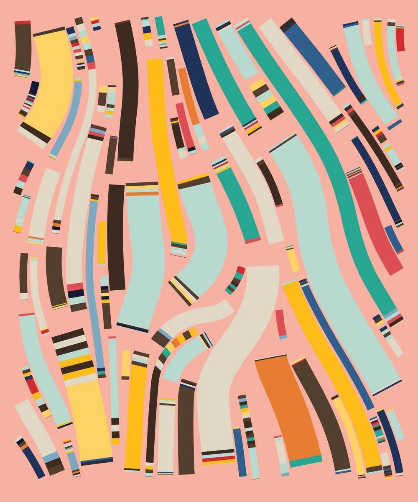
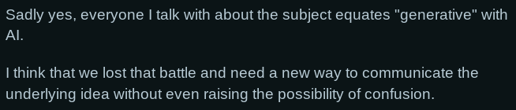
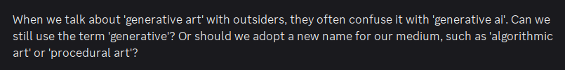
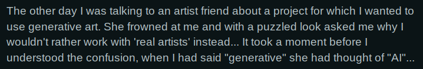
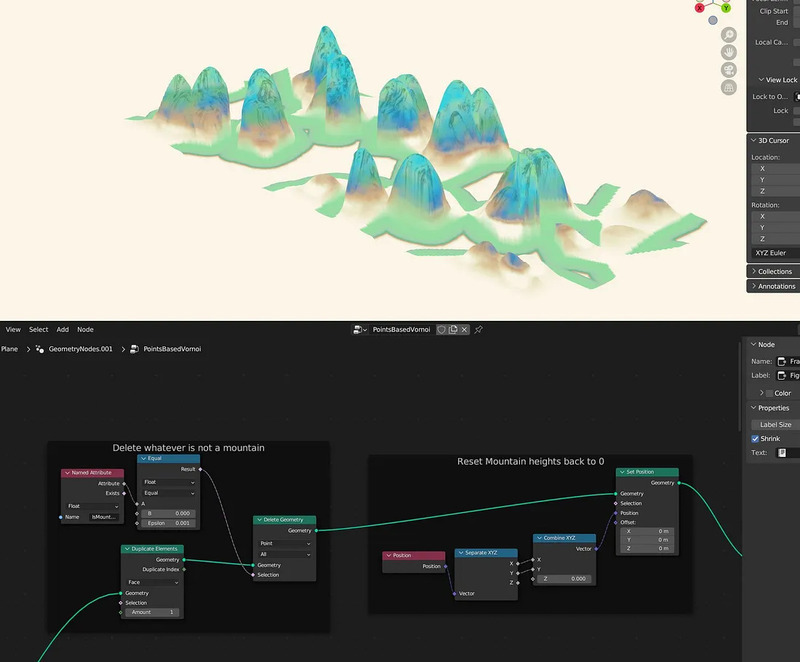
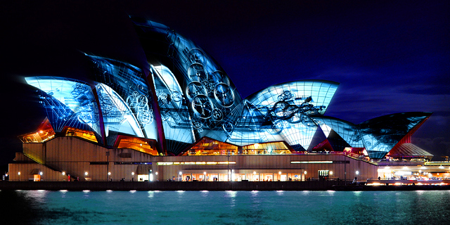
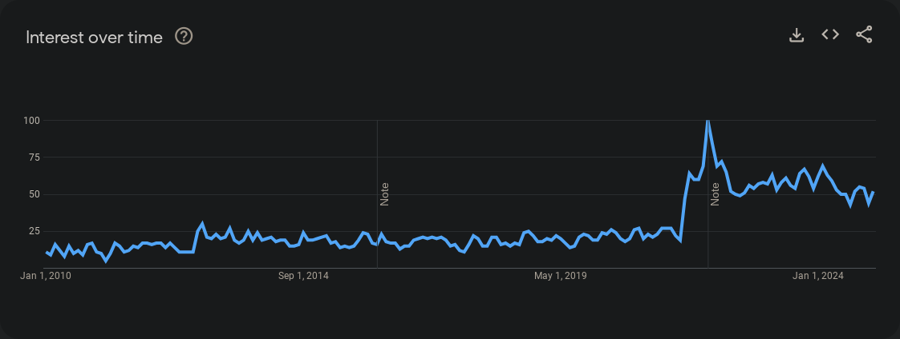
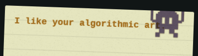

A year ago, I stood by the statement that AI Art is not Generative Art, arguing that the term ‘generative art’ is an art movement in itself that is separate from AI art.
Safe to say, it has been a losing battle.
Even the converse, “generative art is not necessarily AI art”, would be met by confusion from most people. ‘Generative’ has been equated to AI.

Fidenza, a generative artwork system, by Tyler Hobbs
Exhibition



r/generative - Has the word 'generative' been hijacked by AI?
I think it's time to move on to a different label. Words are for
communication, and if a word results in failure of communication, we
should either agree on a common definition (we can’t) or just use better
word.
So, what are the other words for this art?
If you haven’t read the mentioned prequel post, you may not understand what “art” I’m taliking about. There’s one example above, but here’s more.
Fortunately, there are already well-established terms to describe the
medium:
- Procedural art
- Algorithmic art
- Creative coding
It’s just a matter of choosing one and leaving the now-loaded
‘generative’ term behind.
By the process of elimination, I think ‘procedural art’ is the best
term to use. Let me explain each of the other options.
Why not Algorithmic
‘Algorithmic art’ is a top candidate, for sure, and many others have opted for it in the exodus from ‘generative’. Algorithmic art and procedural art are pretty much synonymous, so why or why not?
Pros: Unlike generative art, algorithmic art doesn’t
have the unfortunate connotation from sharing a word with ‘generative
AI’.
Cons: While ‘algorithmic art’ doesn’t immediately
invoke visions of generative AI, the term ‘algortihm’ under the broad definition
of a ‘set of instructions’ would still include machine learning
models.
In fact, the word ‘algorithm’ has also entered commonplace usage via
‘social media algorithms’, which are yet another application of machine
learning and statistics. In this sense, it is used interchangeably with
the recommender system used to construct personalised content feeds.
“The algorithm” is a black box, and the word suggests a system beyond understanding. This connotation is not in the spirit of procedural art, where the procedures are authored knowingly.
Another distinction is that while an algorithm is usually defined as a process that takes some input and processes it into an output, most procedural art programs don’t need inputs at all. They create things from scratch, from maths, from chaos. OK, technically random seeds would be considerend input. But on a conceptual level, no inputs!
Why not Creative Coding
First of all, it’s such a vague phrase. Why not ‘dynamic
programming’? 😉
Anyway, that’s not the main point.
Procedural art has grown beyond just coding. I would even
say most procedural artists don't use code, but nodes and graphs. The
majority of these procedural art would be used in video games and movie
VFX.
Instead of coding, one would use node-based programming connecting
nodes that represent operations, building up a
graph to produce a complex image or even a
3D model.

Shahriar Shahrabi - Procedural Chinese Landscape Painting in Geometry Nodes
And it’s not just for industrial VFX purposes. It’s also used mainly
for multimedia, interactive, and installation art.

Audiovisual projection by Obscura Digital using TouchDesigner, a node-based software. (Picture from YouTube Symphony Orchestra)
So... yeah this genre of art, is not coding.
OK, then why Procedural Art
Because the ‘procedure’, the ‘how’ is the core feature of procedural art.
In procedural art, we describe precisely how the
artwork is made. And it’s far from describing to a chatbot in plain
English. The how is well-defined and understood. Every shape, stroke,
their positions, colours, ranges, constraints, rules of interaction,
etc., are all described in some precise way. Sometimes we go down to individual
pixel level as in a shader. Sometimes at a more geometric level, like in
turtle or vector graphics. Sometimes on a mathematical level, like
fractals. Sometimes it’s even a simulation with emergent properties!
Procedural art is more about the process, watching things unfold and emerge, rather than the final output that algorithms are obsessed about.
Procedural art is about the interaction of rules in interesting ways, regardless of whether the rules were written in code, or connected as a graph, or wired in redstone dust.
Finally, procedural art is not AI art. [Insert same exact argument as AI Art is not Generative Art but with a different name, here]. For funsies, here’s a quick guide: In AI art, you describe what the artwork should be. In procedural art, you describe how the artwork could be.
What now
Language evolves because of general usage. See: AI, crypto,
cyber, generative. As a fellow user of language, I must evolve my languaging as well — starting with this website.
I have updated the following pages to either disambiguate or even
completely replace mentions of “generative art”:
For the record, I’m not rejecting the other perfectly acceptable terms like algorithmic art and creative coding. My art is still algorithmic, and it’s the result of creative coding. I’m just moving away from ‘generative’.
I’m sure we’ll settle on a universal term soon. Language evolves, after all.
Appendix

Searches for “generative art” over time

A visitor has left me this note, which made me rethink